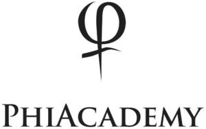

Trade Mark Journal No.2025/045 7 November 2025
WO0000001882804 (3,8,41,44)
Office of origin: Serbia
Date of International Registration:20 February 2025
Date of designation in the UK:
20 February 2025

International priority date claimed: 6 February 2025
(Serbia)
- Class 3
- Non-medicated soaps; cosmetic products for skin care; beauty products and preparations; make-up products; eye cosmetics; non-medicated balms; moisturizing lotions; moisturizing creams; cosmetic preparations for the skin for use during and after treatment for permanent make-up; cosmetic kits; cosmetic dyes; preparations and lotions for tinting, colouring, highlighting and bleaching the eyebrows; cosmetic preparations for application to maintain individual eyebrow extensions; adhesives for attaching eyebrow extensions; cosmetic pigments; cleaning products for eyebrows; cosmetic preparations for eyebrows; cosmetic products for the eyebrows; non-medical cosmetic preparations; creams, gels and lotions for cosmetic use; false eyebrows; shampoos and hair styling products all having coloring effects; cosmetic products for the eyebrows; eyebrow conditioners; eye contour creams for cosmetic use; make-up foundations; make-up preparations; cosmetic foundation; permanent make-up; permanent make-up preparations; cream-based eyebrow hair removal products, gel-based eyebrow hair removal products, art stickers for cosmetic use; paint stripping preparations, make-up powder; make-up products; cosmetic pencils; eyebrow pencils; eyeliners; eye liners for the eyebrows; talcum powder; beauty masks; eyebrow masks; eyebrow oils; eyebrow scrub powder and products; non-medicated neutralizing serums for the eyebrows; non-medicated massage gels; silicone eye pads for cosmetic use; tissues impregnated with cosmetic lotions, tissues impregnated with make-up removing preparations; cotton wool for cosmetic use; tapes for cosmetic use; non-medicated anti-bacterial pads for cosmetic use; non-medicated skin creams for tattoos; non-medicated skin creams for permanent make-up; make-up pads; make-up removing preparations and products; cosmetic and skin-whitening creams; skin care products for use during and after permanent make-up procedures; preparations for skin care before and after pigmentation; essential oils; hair lotions; perfumery products; sharpening preparation for cosmetic purposes; sharpening preparations for cosmetic use.
- Class 8
- Hand-operated permanent make-up apparatus and devices, the equipment and parts therefor; needle cartridges and grips for needle cartridges; hand-operated tattooing apparatus and instruments, the equipment and parts therefor; tattoo needles; needles for permanent makeup; disposable needle cartridges; disposable needles for permanent make-up; microneedling needles; blades [hand tools]; guns for permanent make-up; hand-operated apparatus for tattooing and permanent make-up; equipment for permanent make-up apparatus, spare parts for tattooing and permanent make-up apparatus, namely, cartridges, for disposable needles, disposable tattooing tubes, sleeves, cartridges; hand-operated tools and implements, in particular scissors, tweezers, blades for hand-operated tools, awls, centre punches [hand tools], piercing needles, pliers, tool belts, handles for hand-operated hand tools, blade handles, files, hand-operated brace and bit drills; razors; hand appliances, non-electric, for eyebrow procedures; hand tools for defining the eyebrows; hand-operated, non-electric eyebrow care apparatus.
- Class 41
- Organization of competitions in the field of cosmetics, permanent make-up, microneedling and microblading treatments, mesotherapy and tattooing; conducting competitions on the Internet; organization and conducting of beauty contests; organization of games and competitions; organization of competitions and award ceremonies; arranging and conducting colloquiums, congresses, conferences, exhibitions, seminars and symposiums for cultural or educational purposes, namely, in the field of health, lifestyle advice, cosmetics, permanent make-up, microneedling and microblading procedures, mesotherapy and tattooing; training services concerning practical skills with respect to cosmetic products, permanent make-up, microneedling and microblading procedures, mesotherapy and tattooing; arranging and conducting workshops for applications with respect to cosmetic products, make-up, permanent microneedling and microblading treatments, mesotherapy and tattoos; practical training relating to cosmetic products, permanent make-up, microneedling and microblading treatments, mesotherapy and tattooing; education services related to beauty care; education services related to cosmetic treatments; instruction course services in the field of eyebrow designing, styling and techniques; education and training with respect to permanent make-up treatments; education and training with respect to mesotherapy treatments; education and training with respect to microneedling; education and training with respect to microblading; publication of books and texts, except advertising texts; publication of educational materials for training in the field of use of cosmetics, permanent make-up, microneedling and microblading treatments, as well as the practice of mesotherapy and tattooing; providing electronic publications in the field of cosmetics, permanent make-up, microneedling and microblading treatments, mesotherapy and tattooing; providing educational materials in the field of cosmetics, permanent make-up, microneedling and microblading treatments, mesotherapy and tattooing; practical training in the field of eyebrow care; vocational guidance in the field of eyebrow care; provision of information, consulting and advisory services in the field of training in the use of cosmetic products, permanent make-up, microneedling and microblading treatments, as well as the pratice of mesotherapy and tattooing, providing online reviews, namely, blogs offering information in the field of cosmetic practice, permanent make-up; microneedling and microblading treatments, mesotherapy and tattooing; providing online video equipment featuring information in the field of cosmetic practice, permanent make-up, microneedling and microblading treatments, mesotherapy and tattooing; organizing and conducting online educational forums; placing online of non-downloadable instructional video clips; provision of non-downloadable electronic publications.
- Class 44
- Medical and cosmetic services; cosmetic services for applying permanent make-up; cosmetic tattooing services; microblading services; microneedling services; beauty salons; eyebrow salons; eyebrow styling and shaping services; beauty and health care centers; cosmetic services, therapies and treatments in the field of permanent make-up and human skin pigmentation; medical services, namely, in the field of cosmetic medicine; medical and cosmetic therapy and treatment services; medical services, medical therapies and medical treatments, namely, in the field of esthetic medicine; medical and cosmetic services, medical and cosmetic therapies and treatments in the field of microneedling; tattooing and permanent make-up application services; advice and information concerning medical and cosmetic services; information with respect to beauty care; consultations and advice concerning eyebrow care; beauty therapy services; advice, consultancy and information concerning all the aforesaid services.
PHIACADEMY DOO BEOGRAD
Representative: Plavša & Plavša doo patentna kancelarija , Strumička 51, 11050 Beograd, SERBIA